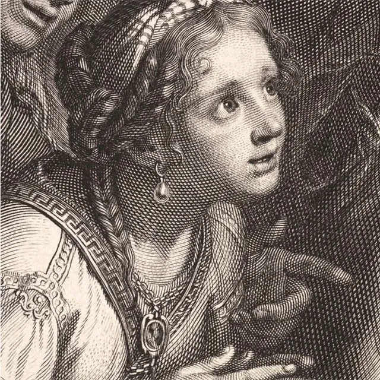
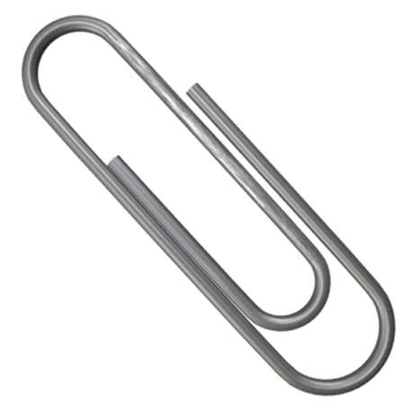
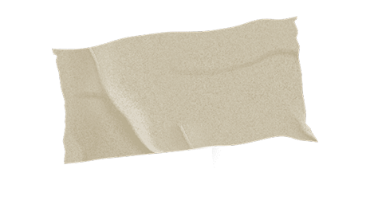
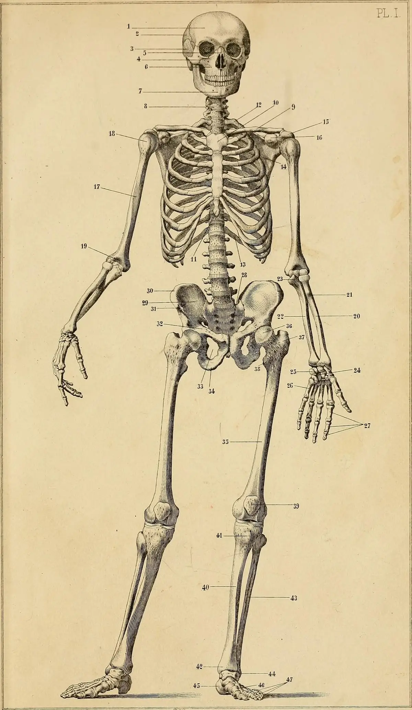

About & Contact


IDcode_07_07 Nº334775388855322V12Andrea Pallás Mateo
Brand design & Illustration
I specialize in branding with the added twist of my illustrations. Always adapting the style to the project at hand.
I'm always searching for new opportunities , both for working and learning, drinking from multitude of novels, videogames, movies, and even TTRPG like Dungeons & Dragons are my inspirations for my little worlds and projects.
asanartworkshop@gmail.com
Tools & Programs
- Adobe Creative Suite
- Procreate
- Blender
- Figma
Languages
- Spanish
- Catalán
- English
Skills
Copywriting - Brand design - Packaging - Photography - Adaptative illustration - Logo creation - Social media managing - UI/UX - Editorial design - Final Art
Contact & Availability
For more information check out my: LinkedIn

